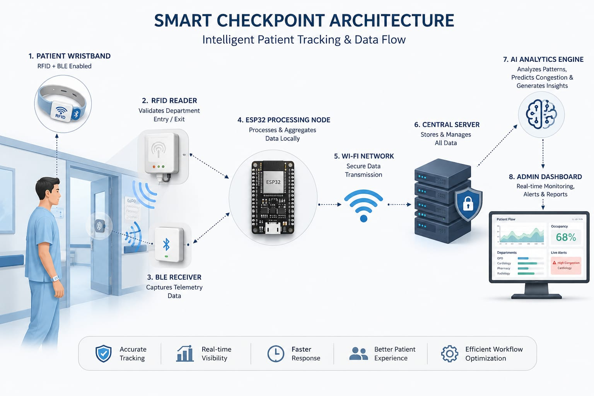
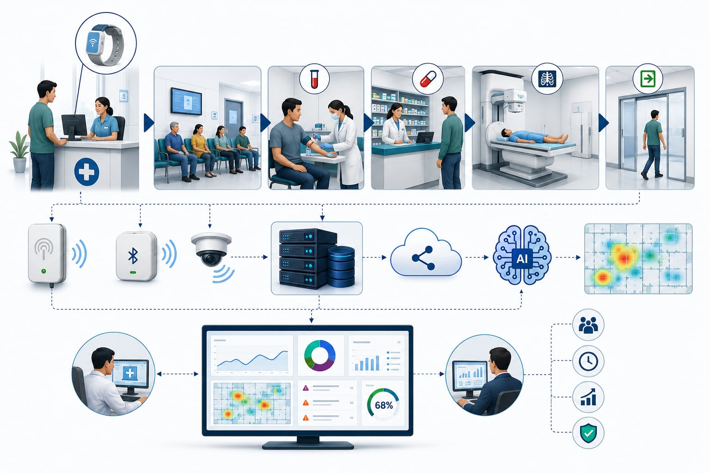
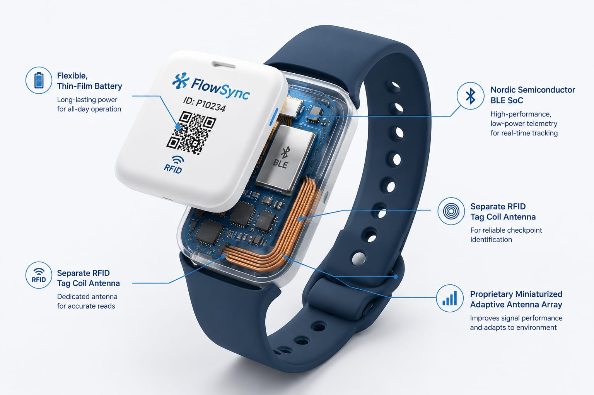
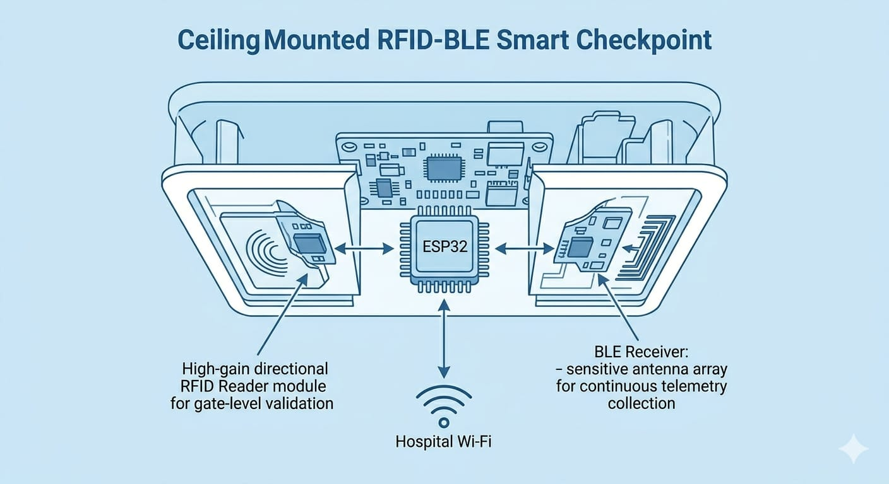

Six connected stages turn everyday patient movement into operational intelligence. Scroll to walk through the pipeline.
Patients are provided with smart wearable devices that enable secure identification and operational monitoring throughout the healthcare environment.
FlowSync combines modern technologies to create a connected healthcare intelligence platform.
Enable patient identification and monitoring.
Supports continuous operational data collection.
Facilitates efficient local data processing.
Ensures reliable information transmission.
Processes operational information and generates insights.
Provides meaningful dashboards and reports.
From RFID + BLE wristbands through edge nodes and a secure central server to the AI analytics engine and admin dashboard.



